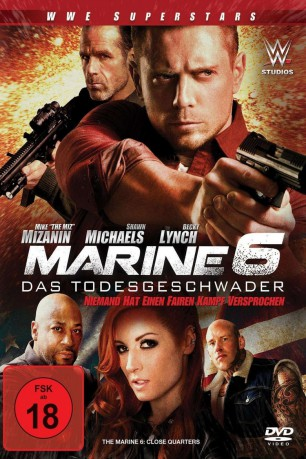
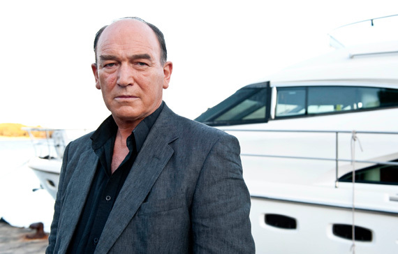

#10033 The Marine 6 - Das Todesgeschwader
 
 IMDB-Wertung: 4.6 / 10
IMDB-Wertung: 4.6 / 10  Metascore: 0
Metascore: 0 
Ein junges Mädchen wird von einer Bande internationaler Krimineller entführt, dessen Kopf die scharfsinnige Maddy Hayes (Rebecca ‚Becky Lynch‘ Quin) ist. Jake Carter (Mike ‚The Miz‘ Mizanin) schließt sich daraufhin mit dem ehemaligen Marine Luke Trapper (Shawn Michaels) zusammen, um das Mädchen zu befreien.
Jahr: 2018
Dauer: 85 Minuten
FSK: 18
Land: USA Studio: Fiction FilmsTonspuren: DTS - ,
Untertitel:
Auflösung: 1080p (1920x808) Größe: 3727 MB
Genre: Action, Drama
Regisseur: James Nunn
Drehbuch: Craig Walendziak
Soundtrack: Christian Wibe
Darsteller:
 Mike 'The Miz' Mizanin als Jake Carter
Mike 'The Miz' Mizanin als Jake Carter- Shawn Michaels als Luke Trapper
- Rebecca Quin als Maddy Hayes
- Louisa Connolly-Burnham als Sarah Dillon
 Terence Maynard als Shawn Taylor
Terence Maynard als Shawn Taylor-  Tim Woodward als Tommy Walker
 Martyn Ford als Oscar Hayes
Martyn Ford als Oscar Hayes- Anna Demetriou als Katrina Rodriguez
- Michael Higgs als Graham Torrence
 Daniel Adegboyega als Lewis Rooney
Daniel Adegboyega als Lewis Rooney- Alec Newman als Patrick Dillon
- Hester Ruoff als Kelly
- Ellie Goffe als Kind Juror
- David William Bryan als Angry Juror
 Lee Charles als John
Lee Charles als John- Tom Cheshire als Blackjack
- Franco Flammia als Andy
- Serhat Metin als Ahmed
- Christopher Mulvin als Young Detective
- George Russo als Detective
 Dan Styles als Harry (Cattle Prod) Goon
Dan Styles als Harry (Cattle Prod) Goon
Datei: X:\FSK18-Collections\Marine, The\Marine 6 - Das Todesgeschwader, The (2018, FSK18, 1920x808).mkv seit 21.11.2018
Festplatte: FSK18
 Es gibt insgesamt 9 Filme in der Gruppe 'FSK18-Collections\Marine, The'
Es gibt insgesamt 9 Filme in der Gruppe 'FSK18-Collections\Marine, The'